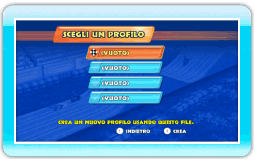
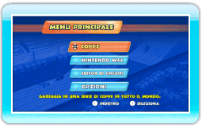

9 |
Inizio del gioco |
 |
Se giochi per la prima volta, devi creare un nuovo profilo inserendo il tuo nome in un file vuoto. Se vuoi giocare con un profilo già esistente, sceglilo per usarlo.
Nota: seleziona un profilo e premi
 per vedere il menu delle opzioni profilo, dove potrai cambiare il nome del profilo o cancellarlo. per vedere il menu delle opzioni profilo, dove potrai cambiare il nome del profilo o cancellarlo.Una volta cancellati, i dati del profilo non potranno essere recuperati. Dopo aver scelto un profilo, si accede al menu principale.
|
 |
 |
 |